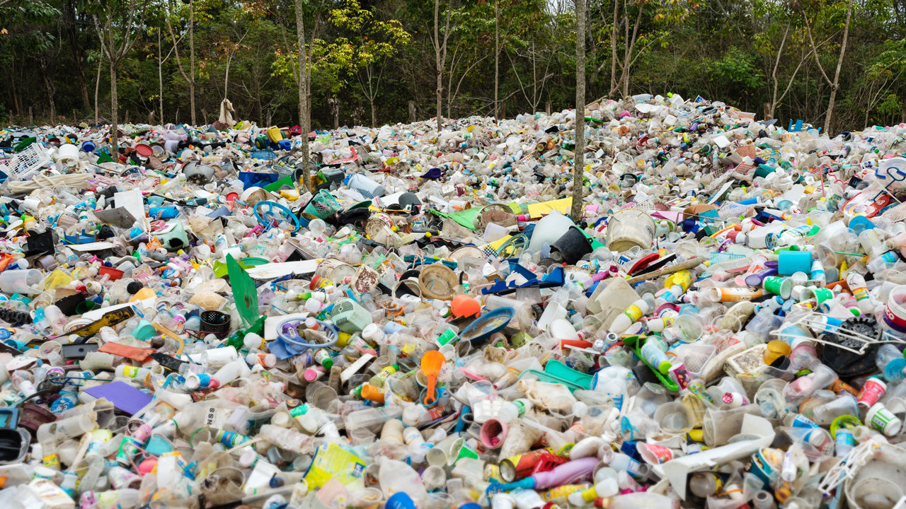
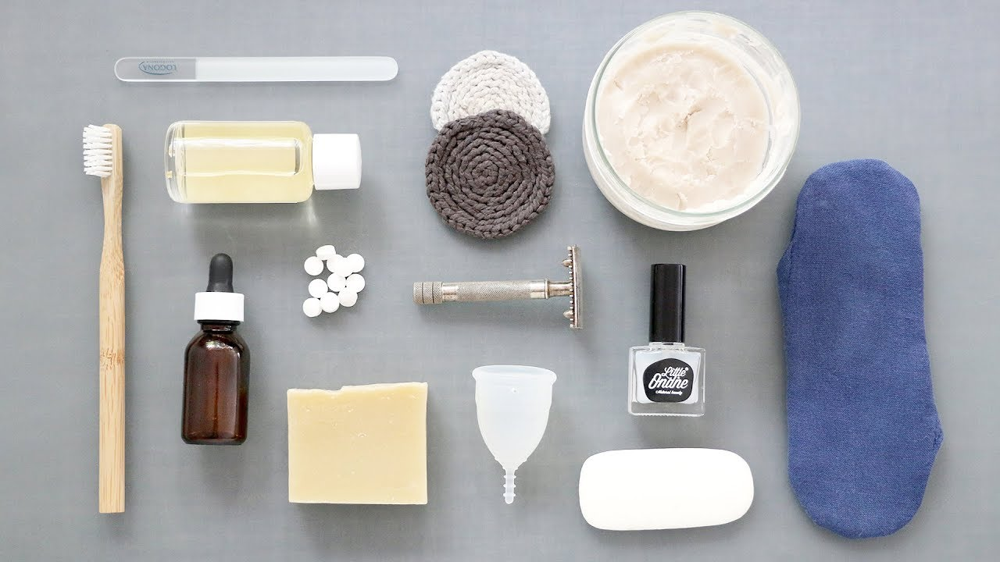
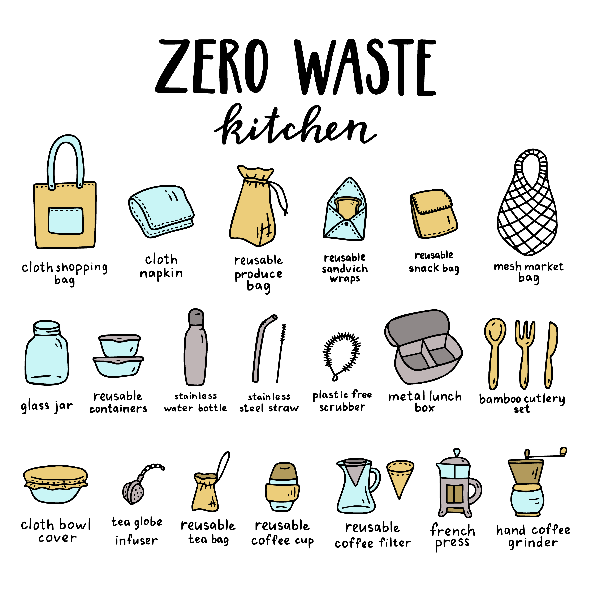

The Plastic Problem
Tacoma sends 165,000 tons of waste to landfill each year, and a total of 378,000 tons when including recycling and composting.
Though the city of Tacoma has plans to implement new waste management facilities and increase public education, there is still much work to be done.
Community involvement will greatly impact this goal. One major contributor to waste globally is single-use plastic pollution. If the current trends
continue, by 2050 the world will have produced 26 billion tons of plastic waste to flood the planet. By aiming to consume
less single-use or overly packaged goods, Tacoma residents can reduce our waste while adopting cleaner and more intentional lifestyles.

The Zero Waste Lifestyle
The zero waste lifestyle involves living everyday life while sending the least amount of trash to landfill. Mother Bea Johnson, known as the founder of the zero waste movement, is a social media influencer who preaches the zero waste lifestyle and all of its benefits.
"Refuse, Reduce, Reuse, Recycle, Rot (and only in that order) is my family’s secret to reducing our annual trash to a jar since 2008" says Bea. Her website and book are both called 'Zero Waste Home.'
Here are some zero waste tips generally advised by the zero waste community:
- Make these single use plastic swaps:
- plastic water bottles -- reusable metal water bottle
- plastic cutlery -- metal or bamboo (compostable) cutlery
- paper coffee cups -- reusable glass or plastic coffee cup
- paper napkin -- hankerchief or cloth napkin
- plastic wrap -- beeswax wraps
- takeout boxes -- bring a metal or washable container to the restaurant
- In the bathroom, follow these steps:
- buy only products that you need, and try to make them at home if you can (store them in a glass jar)
- attempt to buy low-packaged or no-packaged products, including shampoo, conditioner, lotion and soap in bar form
- buy silk dental floss (which is compostable)
- use a bamboo toothbrush (if the bristles are removed after use, it can be composted)
- buy toothpaste in tablet or powdered form (they come in glass or compostable packaging)
- make your own cleaning products (white vinegar is a good base)
- use a metal safety razor (recyclable and sturdy)
- make or buy reusable makeup remover rounds
- if it applies to you, try using a menstrual cup instead of plastic products

- In the kitchen and when shopping for food, consider these options:
- buy as much as you can from the bulk section of the store. You can thrift, reuse or buy glass jars to store your bulk food in.
- look for companies that support the planet and use recycled materials (and are recycleable themselves)
- bring fabric produce bags to the store instead of the plastic ones offered
- bring a fabric tote bag to carry groceries in
- check your fridge before shopping to make sure you are only buying what you don't have enough of
- try to meal prep at the beginning of the week
- have a compost and recycling bin accessable in your kitchen, and educate yourself on what can go in each bin
- make your own bread or buy it using a cloth bread bag
- avoid or eat less animal products
- make nut milk, yogurt, bread, ice cream and general meals at home
- grease baking sheets instead of using parchment paper or tinfoil

- As for clothing:
Below is a toothpick dispenser. Though it is cute, it is also an example of a single use item that will be consumed once and thrown away.
All in all, try to shop smart, buy less, reuse what you have, thrift what you don't, and recycle or compost it all when you're done.
Citations
https://cms.cityoftacoma.org/enviro/Environmental-Services-Strategic-Plan-2014.pdf
https://zerowastehome.com/
https://www.goingzerowaste.com/blog/the-ultimate-list-of-zero-waste-swaps
https://www.sciencemag.org/news/2017/07/next-30-years-we-ll-make-four-times-more-plastic-waste-we-ever-have
https://ecowarriorprincess.net/2018/12/5-simple-easy-tips-to-create-a-fuss-free-zero-waste-kitchen/
https://earthrights.org/blog/fast-fashion-is-an-ecofeminist-issue/
https://www.youtube.com/watch?v=nVI36kjWcX4